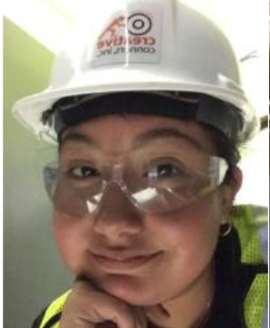

Speakers
Chelsea Burket
Chelsea Burket graduated from Penn State Altoona with a bachelor’s degree in environmental studies and a minor in German. She spent her junior year at Humboldt University in Berlin, Germany, after never having traveled “east of New York, south of the Outer Banks, and west of Cleveland.” Chelsea credits her study abroad experience with identifying her professional passion: cities and how to improve life within them.
After obtaining a master’s degree in urban planning from the University of Michigan, she settled in Pittsburgh and began working for a national consulting firm on projects strengthening local economies and the organizations that support them. In 2021, however, she decided to give back to her own community by reviving a shuttered neighborhood ice cream shop. Chelsea’s idea for GenEd courses? “How Change Happens” and “Transitions to Clean Energy,” both explored through semester-long group projects.
Solomon Yaw Darko
Solomon Yaw Darko entered college as an aspiring medical doctor but exited it as an entomologist (insects!), teaching at the University of Ghana, Legon, for several years. He then decided to move to the U.S. and, as if that were not enough, change his profession in the process, retraining for a career as a Licensed Professional Counselor. He now has his own practice in Waterbury, CT.
Solomon’s wide-ranging academic credentials mirror these transitions. He holds a master’s degree in counseling from the University of Bridgeport, an MBA from the University of Connecticut, a master’s degree in entomology from the University of Ghana, Legon, and a Diploma in Education from the University of Cape Coast, Ghana. Along the way, he has received many accolades, worked for non-profit organizations, and participated in a research project sponsored by the United Nations. His advice to college students? “Be open. Be fluid.”
Jessica Molina
Jessica Molina wanted to be a surgeon, then embraced engineering, but a drama class unveiled her true passion for technical theater. For a moment, combining her divergent interests (“fixing things,” working in the arts) seemed impossible, but a training program in the automation division of Cirque du Soleil provided her with a clear path forward into the field of manufacturing automation.
Since graduation with a bachelor’s degree in integrative arts (primary focus: engineering; secondary specialization: theater), she has been working as a theater technician, making stages lift, scenery move and realizing other feats of “magic.” [is this a correct description? Did she not also say something about electrics? HELP!] Jessica describes the path towards finding the right major as difficult and stressful. For students who find themselves in a similar situation, she has the following piece of advice: realize what you are good at, what traits you have, and then “just try.”
Jennie Rothenberg Gritz
After Jennie Rothenberg Gritz earned her bachelor’s degree in English, she explored various career possibilities, including freelance writing and teaching at a private school. As she sees it, these first jobs allowed her to “whittle down” her far-flung professional ideas and identify a career field--editing--that suited her. After obtaining a master’s degree in journalism from UC Berkeley, she worked as a senior editor at The Atlantic before joining the Smithsonian Magazine, where she currently serves in the same position.
Based on her experience, Jennie advises students to build a professional career right from where they are, using their talents, a laptop, the patience of a step-by-step approach, and the willingness to venture into areas where others fear to tread. She says: “Career is a quest. Life is a quest.” And so, a seemingly “lost year” can be a “found year” as long as energy and insight are drawn from the experience. [155 words]